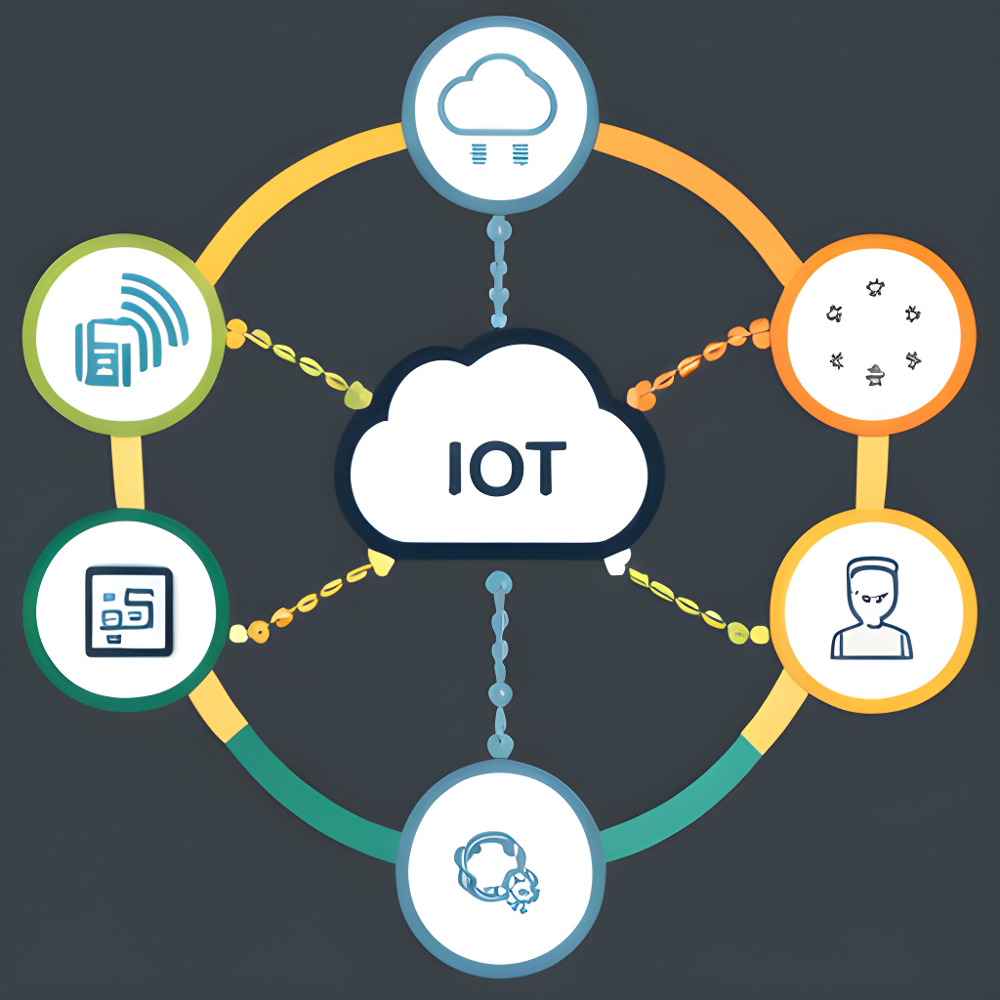
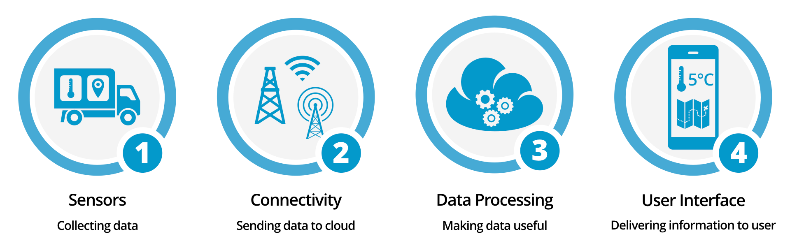
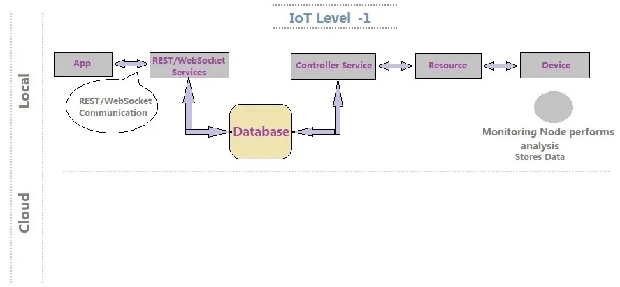
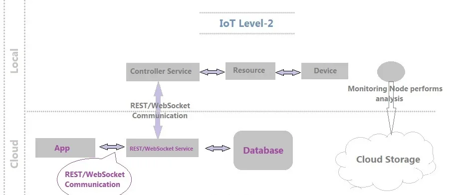
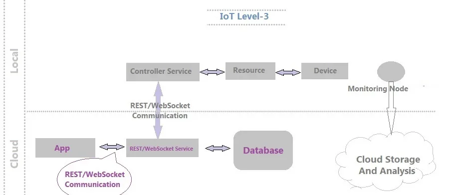
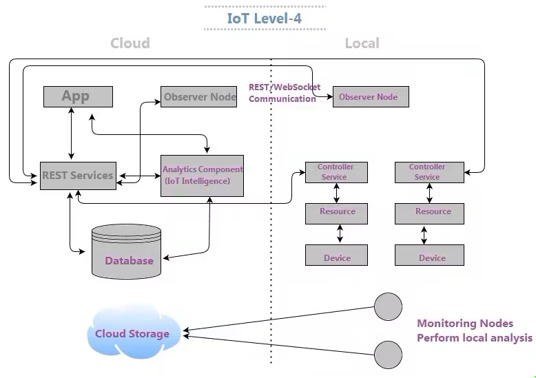
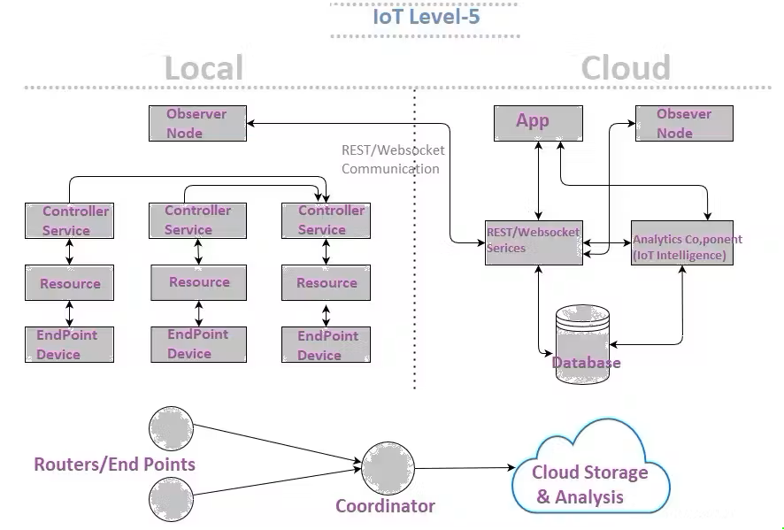
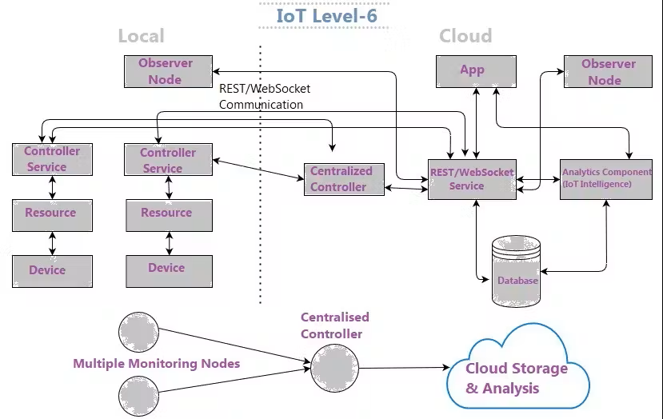

Internet of Things (IoT): Connecting the World Around Us
The Internet of Things (IoT) is a transformative technology that has revolutionized the way we interact
with the digital world and the physical environment around us. IoT refers to the network of
interconnected devices and objects that communicate and share data over the internet, enabling them to
collect and exchange information to make our lives more efficient, convenient, and productive.
Here are some key points to consider when discussing IoT for a web page:
- IoT Ecosystem: IoT encompasses a vast ecosystem of devices, ranging
from smart thermostats and
wearable fitness trackers to industrial sensors and autonomous vehicles. These devices are
equipped with
sensors, actuators, and connectivity capabilities, allowing them to gather data and respond to
commands.
- Data Collection and Analysis: IoT devices continuously collect and
transmit data to centralized
servers or cloud platforms. This data can be analyzed to gain valuable insights, monitor
performance,
and make informed decisions. For example, IoT can help track energy consumption in a smart home
or
monitor machinery in a factory.
- Remote Control and Automation: One of the primary benefits of IoT is
remote control and
automation. Users can interact with their IoT devices through web applications or mobile apps,
enabling
them to adjust settings, receive alerts, or even control devices from anywhere with an internet
connection.
- Improved Efficiency and Convenience: IoT enhances efficiency and
convenience in various domains.
For instance, smart home devices can automate tasks like adjusting lighting and thermostats,
while
connected vehicles can provide real-time traffic updates and predictive maintenance alerts.
- Security and Privacy Concerns: As IoT devices become more prevalent,
security and privacy
concerns have emerged. Ensuring the protection of user data and securing IoT networks are
critical
challenges that need to be addressed. Encryption, authentication, and regular software updates
are
essential components of IoT security.
- Industry Applications: IoT has significant applications in various
industries, such as healthcare
(e.g., remote patient monitoring), agriculture (e.g., precision farming), logistics (e.g.,
supply chain
optimization), and manufacturing (e.g., predictive maintenance).
- Interoperability: Ensuring interoperability between different IoT
devices and platforms is
crucial for a seamless user experience. Standards and protocols like MQTT and CoAP facilitate
communication and data exchange among various IoT components.
- Environmental Impact: IoT can play a role in sustainability efforts by
optimizing resource
utilization. For example, smart grids can efficiently distribute energy, and environmental
sensors can
monitor air quality and pollution levels.
- Future Trends: The IoT landscape is continually evolving. Emerging
trends include edge computing,
where data processing occurs closer to the source (device) to reduce latency, and the
integration of AI
and machine learning for more intelligent and predictive IoT applications.
- Challenges and Opportunities: While IoT offers numerous benefits, it
also presents challenges,
including scalability, data management, and ethical considerations. Addressing these challenges
and
leveraging the opportunities that IoT provides will be pivotal in shaping the future of this
technology.
Major Components of IoT

-
- Smart Devices and Sensors
This is the first tier of an IoT ecosystem and it forms the backbone of the entire Internet of
Things network. Data is indispensable for IoT and sensors are an important factor to ensure the
accuracy and credibility of data. This essential layer consists of physical, micro appliances,
embedded in an IoT device, which are responsible for collecting data or controlling a mechanism.
-
- Sensors: Sensors are devices or instruments that are
designed to detect
and measure specific physical properties or environmental conditions and convert
them into
signal or data that can be interpreted, displayed, or used for various applications.
Sensors play a crucial role in a wide range of fields, including electronics,
automation,
manufacturing, environmental monitoring, healthcare, and more.
- Transducer: A transducer is a device or component that
converts one form
of energy into another. It is commonly used in various fields, including
electronics, physics, engineering, and measurement technology. Transducers play a
crucial role in systems that require the conversion of physical quantities or
signals from one form to another for the purpose of measurement, control, or
information processing.
- Actuators: Actuators are devices or components that
are responsible for converting energy into physical motion or action. They play a
crucial role in a wide range of systems and applications, including robotics,
automation, aerospace, automotive, manufacturing, and more. Actuators are used to
control or manipulate various mechanisms, objects, or processes by producing motion,
force, or displacement in response to an input signal or control command
-
- Connectivity
connectivity in IoT is a multifaceted topic that involves various wireless and wired
technologies, protocols, and standards. It plays a crucial role in enabling IoT devices to
communicate, share data, and function effectively in a wide range of applications, from smart
homes to industrial automation and beyond.
-
- Gateway: Incoming, raw data from the sensors must pass
through gateways to reach the cloud. Gateways translate network protocols ensuring
seamless communication of all devices within the network. Essentially this makes the
gateways a crucial communication point and is responsible for easy management of
data traffic.
Moreover, gateways offer security by protecting the system from unauthorized access
and malicious attacks. It can also be considered as a security layer as the data
flowing through it protected by the latest encryption practices.
- Protocol: Once the data has been collected by the
sensors, it requires a medium for transport. In other words, a communication channel
is necessary between sensors and the cloud. IoT protocols are responsible for
transferring data in the online world and this transmission can only be possible if
two devices are safely connected. IoT standards and protocols involve an invisible
language allowing physical objects to communicate with one another.
The choice of network depends on factors such as power consumption, speed of data
transfer, range, bandwidth and overall efficiency. Some of the most popular IoT
wireless protocols and standards include Bluetooth, Wi-Fi, ZigBee, LoRaWAN, DDS,
MQTT, cellular, etc. These and other channels make it easy as well as secure to
transfer and exchange data to the next IoT layer for processing.
-
- Cloud
- Cloud computing in IoT serves as a central hub for managing, storing, processing, and
analyzing the vast amounts of data generated by IoT devices. It offers scalability,
security, and cost-efficiency, enabling real-time data processing, remote device management,
and integration with other systems. The cloud acts as the backbone of IoT, facilitating
data-driven insights, remote control, and seamless device connectivity, making IoT
applications more efficient and responsive to user needs.IoT generates vast amounts of data.
Analytics tools and machine learning algorithms in the cloud are used to extract meaningful
insights, detect patterns, and make
-
- User-Interface
- The user interface (UI) in the Internet of Things (IoT) serves as the critical bridge
between users and their interconnected devices and systems. It provides a visual means for
users to monitor device data, issue commands, and make informed decisions. IoT UIs are
versatile, enabling users to access and control devices from various platforms, including
smartphones and computers. They present data through intuitive visualizations, and users can
customize their interfaces to meet their specific needs. These interfaces play a pivotal
role in diverse IoT applications, from smart homes to industrial automation, enhancing user
experience, enabling efficient device management, and driving business value through data
insights and real-time control.
In essence, IoT user interfaces empower users to visualize, control, and interact with their
IoT devices, whether for home automation, healthcare monitoring, or industrial processes.
They ensure that users have a seamless, user-friendly experience and are a fundamental
component in realizing the potential of IoT for businesses and individuals alike.
Layers in IoT Architechture
The Internet of Things (IoT) can be categorized into four levels or layers, which represent
different stages of data processing and interaction within an IoT system. These levels are often
referred to as follows:
- Sensing Layer (Perception Layer):
- This is the lowest layer in the IoT architecture.
- It involves physical devices, sensors, and actuators that interact with the physical
world to
collect data or control devices.
- Sensors can include temperature sensors, humidity sensors, motion detectors, GPS
modules,
cameras, and more.
- Actuators are devices that can perform actions based on instructions received from
higher layers, such as turning on lights, opening valves, or controlling motors.
- The sensing layer is responsible for data acquisition and often generates raw data.
- Network Layer (Communication Layer):
- The network layer is responsible for transmitting data from the sensing layer to the upper
layers (edge or cloud) and vice versa.
- It involves various communication protocols and technologies, such as Wi-Fi, Bluetooth,
Zigbee, LoRa, cellular networks (3G, 4G, 5G), and more.
- This layer ensures the connectivity and data transfer between IoT devices and the central
processing units.
- Middleware Layer (Data Layer):
- The middleware layer processes and manages the data received from the network layer.
- It includes data storage, data preprocessing, data filtering, and data transformation
components.
- Middleware may also involve edge computing or fog computing, where some processing occurs
closer to the edge devices to reduce latency and bandwidth usage.
- This layer prepares the data for higher-level applications and analytics.
- Application Layer (Processing Layer):
- This layer focuses on processing and analyzing the data received from the middleware
layer.
- It involves data analytics, business logic, and application development.
- IoT applications and services are developed and run in this layer, providing value to
users or organizations.
- Machine learning algorithms, dashboards, web and mobile applications, and decision-making
processes are often implemented at this level.
- Business Layer (Presentation Layer):
- The business layer is the topmost layer in the IoT hierarchy.
- It is concerned with delivering insights, actionable information, and user interfaces to
stakeholders.
- This layer hosts IoT applications and services that enable users and organizations to make
informed decisions, automate processes, and interact with IoT data.
- User interfaces, reports, alerts, and integration with other business systems are key
components of this layer.
These five layers represent a comprehensive framework for designing and implementing IoT
systems, from data collection and connectivity to data processing, application development, and
business integration. Depending on the specific IoT use case and requirements, additional layers
or components may be added for security, management, and scalability.
Levels in IoT Architechture
The Internet of Things (IoT) is a fascinating and transformative technology that connects everyday
objects and devices to the internet, allowing them to collect and exchange data. IoT technology evolves
through different levels or stages, each representing a different degree of sophistication and
capability.
The following components include an IoT framework:-
- Node:-IoT Nodes are devices that connect to the internet through a gateway; in simpler words,
they are the elements within an IoT ecosystem that allow the connection of the physical world
with the Internet. A monitoring node manages the IoT system.
- Device:-An IoT Device has capabilities like unique identity, sensing, actuating, and monitoring.
An IoT device will always have a unique identity! Wireless sensors, applications, actuators, and
computer devices are examples of IoT devices. These are linked to a specific object that
communicates through the internet, allowing data to be transferred between objects or people
automatically and without the need for human interference.
- Resource:-Every IoT has a software module for the entry, processing, and storage of sensor data.
They are therefore used to control actuators connected to devices.
- Controller Service:- It acts as a connector between web service and device. The controller
service sends data from the system to the web service and receives commands for controlling the
device from the application (via web services).
- Database:-It is the repository for all data provided by IoT devices. It is either held locally
or on the cloud in the form of a database.
- Web Service:- Web services connect the IoT computer, application, database, and research
components. Web services may be implemented either using HTTP and REST concepts (REST service)
or the WebSocket protocol (WebSocket service).
- Analysis Component:- It retrieves data from the IoT device's database and turns it into useful
information. This module analyses data, produce results and presents them in a user-friendly
format using various algorithms. This analysis can be performed locally or in the cloud, and the
resulting data can be stored locally or in the cloud.
- Application:- IoT applications have a user-friendly interface to track and manage different IoT
device aspects. Users will access the Monitor system and the data generated.
Certainly, here's a detailed explanation of IoT levels, which represent stages of maturity and
sophistication in Internet of Things (IoT) implementations:
- Level 0 - No IoT:
-
- At this stage, there is no IoT implementation in place.
- Organizations have not yet adopted IoT technologies or connected any devices to the
internet.
- There is no data collection or automation related to IoT.
- This level represents a lack of IoT presence.
Example:
- A traditional neighborhood bakery that relies on manual processes for baking,
sales, and inventory management. There is no use of IoT technology.
- A small local grocery store that doesn't use any IoT technology. They manually
manage inventory and do not have any connected devices.
- A small family-owned bookstore that uses manual inventory management, cash
registers, and handwritten receipts. There are no connected devices or digital
systems.
- A small, local coffee shop that relies on manual order-taking, cash registers,
and traditional appliances. There is no integration of IoT technology.

- Level 1 - Basic IoT:
-
- Basic IoT marks the initial step into IoT implementation.
- Devices are connected to the internet or a local network, allowing data to be
collected from
them.
- The data collected is typically basic and may include device status, simple sensor
readings,
or
operational data.
- Automation and analytics capabilities are limited at this stage.
Example:
- : A home weather station that collects temperature and humidity data and sends
it to a mobile app for display. The weather station device is connected to the
internet, allowing users to monitor weather conditions remotely.
- A smart thermostat in a home that allows remote temperature control via a
smartphone app. It collects temperature data and sends it to the cloud for
analysis.
- A smart lighting system in a home that allows users to control the lights
remotely using a smartphone app. The system includes light bulbs with built-in
Wi-Fi connectivity.
- The coffee shop installs IoT-enabled coffee machines that provide data on usage
patterns and maintenance needs. This data is collected in a cloud-based system
for basic analytics.

- Level 2 - Connected IoT:
-
- At this level, IoT devices are not only connected but can also communicate withn
each other and with central systems.
- Data from multiple devices is integrated to provide a more comprehensive view and
insights.
- Basic automation and monitoring capabilities are often implemented.
- Organizations may start to see efficiency gains and improved visibility into their
operations.
Example:
- A smart home system where various devices like thermostats, lights, and security
cameras can communicate and be controlled through a central hub or smartphone
app. For instance, when a motion sensor detects movement, it can trigger the
lights to turn on.
- A smart agriculture system where soil moisture sensors communicate with
irrigation systems. When the sensors detect dry soil conditions, they trigger
the irrigation system to water the crops.
- A smart office environment where sensors in individual workspaces monitor
occupancy. When a workspace is vacant for an extended period, the HVAC system
automatically adjusts the temperature to save energy.
- In addition to the smart coffee machines, the coffee shop deploys IoT sensors in
the store to monitor customer foot traffic. When the shop gets busy, the coffee
machines adjust brewing schedules to meet demand.

- Level 3 - Smart IoT:
-
- Smart IoT signifies a higher level of sophistication and intelligence.
- Data from IoT devices is used for predictive analysis and decision-making.
- Advanced analytics and machine learning techniques are applied to the data.
- Automation is more intelligent and responsive, leading to better resource
optimization and problem prediction.
Example:
- A smart energy grid that analyses real-time data from IoT sensors on power lines
and substations to predict and prevent electrical faults or outages. The system
uses machine learning algorithms to optimize power distribution.
- Healthcare wearables that monitor a patient's vital signs and use AI algorithms
to detect early signs of health issues, such as irregular heart rhythms, and
send alerts to healthcare providers.
- : An industrial predictive maintenance system in a manufacturing plant. IoT
sensors on machinery collect data, and machine learning algorithms predict when
equipment is likely to fail, enabling proactive maintenance.
- : The coffee shop employs advanced analytics to predict customer preferences and
optimize inventory levels. The system recommends which coffee blends to brew
based on historical data and current weather conditions.

- Level 4 - Autonomous IoT:
-
- In autonomous IoT, systems can make complex decisions independently, often with the
help of
edge
computing for real-time processing.
- Devices and systems are highly adaptive and self-optimizing.
- Human intervention is minimized, and IoT systems can handle dynamic and
unpredictable
situations
effectively.
- This level is characterized by a high degree of autonomy.
Example:
- Self-driving cars are a prime example. These vehicles use a multitude of sensors
(lidar, cameras, radar) and real-time data analysis to navigate roads, make
decisions, and avoid obstacles without human intervention.
- Autonomous drones used for agriculture. These drones can survey fields, analyse
crop health, and autonomously apply fertilizers or pesticides where needed.
- An autonomous agriculture robot that uses sensors to detect soil conditions,
plant seeds, and apply precise amounts of fertilizer and herbicide without human
intervention.
- The coffee shop implements an autonomous barista robot that can take customer
orders, brew coffee, and serve beverages without human intervention. It uses
sensors and AI to navigate the shop and interact with customers.

- Level 5 - Full Integration and AI:
-
- The highest level of IoT maturity involves full integration of IoT into an
organization's
operations and strategy.
- IoT systems are deeply integrated with all aspects of the business.
- Advanced artificial intelligence (AI) and machine learning are used for continuous
improvement,
innovation, and the development of new revenue streams.
- IoT becomes a central driver of business processes, product development, and
customer
experiences.
Example:
- An industrial manufacturing plant that uses IoT sensors to monitor machine
health, optimize production schedules, predict maintenance needs, and
automatically adjust processes in real-time. Advanced AI algorithms continuously
improve production efficiency and quality.
- A smart city infrastructure that uses IoT sensors to manage traffic flow, reduce
energy consumption, and improve public safety. Advanced AI algorithms analyze
data from various sensors and make real-time decisions to optimize city
services.
- A smart retail store that combines IoT sensors, facial recognition, and AI
algorithms to optimize the shopping experience. It tracks customer behavior,
adjusts store layouts in real-time, and offers personalized product
recommendations.
- The coffee shop is part of a larger chain that uses IoT and AI for comprehensive
optimization. The system continuously adapts pricing, menus, and staffing based
on real-time data, including competitor pricing and social media sentiment
analysis. It can even predict future trends in coffee preferences and adjust its
offerings accordingly.

It's important to note that the specific characteristics and criteria for each level may vary
depending on the context and goals of the IoT implementation. Organizations progress through these
levels as they enhance their IoT infrastructure, data analysis capabilities, and automation
capabilities. The ultimate goal is to leverage IoT to drive efficiency, innovation, and business
value.